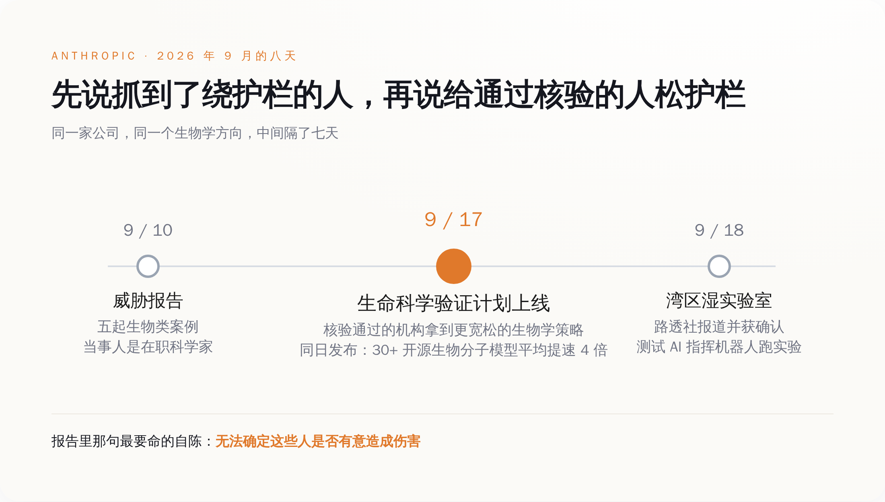
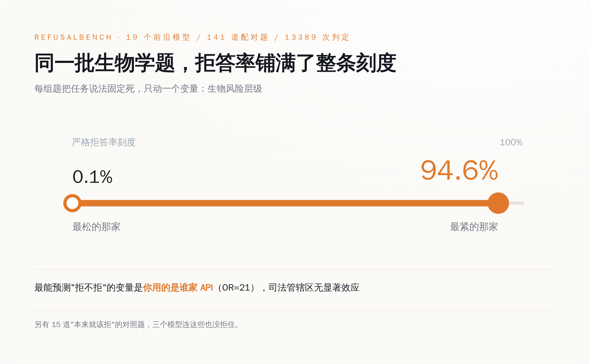
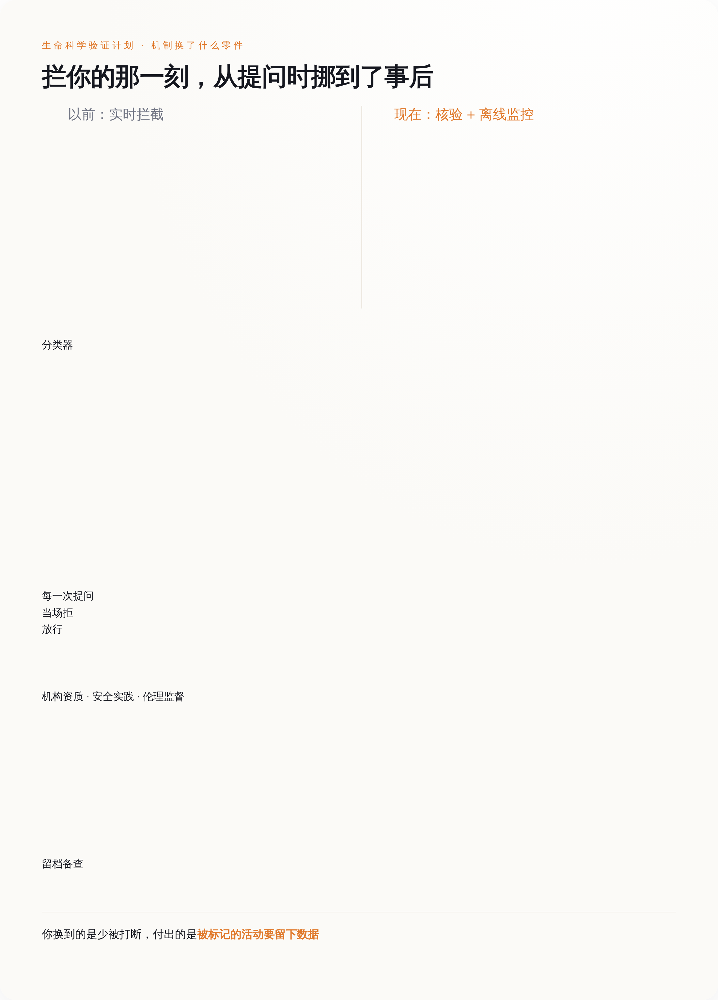

一、绕过护栏的那五个人，履历没问题
那份报告覆盖的时间是 2025 年 12 月到 2026 年 8 月，分七类危害，生物这一类下面挂了五个案例。绕过手法值得单独拎出来看一眼：按报告的说法，其中一些人绕开了按地区封锁访问的限制，另一些人在提问时"混淆自己研究的目的以规避我们的安全措施"。翻过来说就是：换个 IP，换个说法。两样都不需要技术背景，只需要知道护栏在看哪里。
然后是最难受的那句。Anthropic 说，它没法确定这些行为人是"有意造成伤害"，还是在做正经科研。
这句话表面上是谨慎，实际上是招供。一道护栏的全部工作原理，是假设危险请求会长得像危险请求——坏人会在提示词里露出坏话，好人不会。五个案例把这个假设按在地上摩擦了一遍：真正的生物学能力藏在实验设计、序列文件、蛋白结构里，而护栏在读措辞。措辞是这条链上最便宜的一环，谁都能改，改了不花钱，改错了也没有代价，大不了重开一个对话。
所以真正的问题不是"护栏被绕过了"。护栏当然会被绕过，任何一道基于文本特征的过滤都会被绕过，这不新鲜。真正的问题是另一头：既然懂行的人一改说法就能过去，那这道护栏天天在拦的，到底是谁？
二、同一批题，拒答率从 0.1% 到 94.6%
今年 5 月有一篇叫 RefusalBench 的论文（arXiv 2605.21545），干的就是这件事：把拒答行为本身当成被测对象，量一量。
它的做法是配对题。141 道题分成 47 组，每组内部把任务的说法固定死，只动一个变量——生物风险层级，从良性、到灰色、到明确双用途。这样一来，模型拒不拒，就不能赖"题目问的领域不一样"。题目覆盖八个蛋白设计子领域，上了 19 个前沿模型，三个 AI 评委按五级顺从度打分，总共 13389 次判定。
结果是：面对同一批题，各家模型的严格拒答率从 0.1% 铺到 94.6%。
这不是"有的严一点有的松一点"的程度差别。这是同一道题，在一家这儿是学术问题，在另一家那儿是恐怖袭击预备行为。论文顺手做了回归，发现最能预测"会不会被拒"的变量，是你用了谁家的 API——Anthropic 那套栈的 OR 值到 21；而司法管辖区这个变量，没有显著效应。论文还塞了 15 道"本来就该拒"的对照题进去，有三个模型连这个都拒不住。

把这几个数字摆在一起看，结论挺不客气的：拒答率不是安全水位线，它是一个旋钮，刻度写在各家公司的产品经理心里。旋钮既然在厂商手上，那什么时候他们会想把它拧松？答案是，当拧紧开始有账单的时候。
三、模型从聊天框变成了实验器材
就在开门的同一天，9 月 17 日，Anthropic 还发了另外一篇东西，讲 Claude 拿开源的生物分子模型做了什么。
数字是这样的：36 个优化包，覆盖 30 多个开源模型，跨六个家族（共折叠与结构预测 14 个、幻觉法设计 3 个、结构生成 6 个、反向折叠 3 个、基因组学 7 个、蛋白语言模型 3 个），耗时不到四周，平均提速约 4 倍。分到具体模型上，快速模式里 OpenDDE 提了 2.3 倍，Chai-1 提了 6.4 倍；基因组学和蛋白语言模型在精确模式下是 1.2 到 5.0 倍。里面还有一个叫 FlashPairformer v1 的算子，在 pair width 128（AlphaFold3 和 Boltz-2 用的规格）上把 triangle attention 跑到了领域标准核的 2.7 倍，256（Protenix v2 的规格）上 2.9 倍。代码按 Apache 2.0 扔在公开仓库里，能直接插进 AlphaFold3、OpenFold3、Boltz-2、ColabFold、OmegaFold。
再往前一个月，8 月那批湿实验室结果更直白：15 个靶点、354 个结合物，Adaptyv Bio 和 Twist Bioscience 负责合成和测试，Mythos Preview 的总命中率 26.7%，Opus 4.8 是 22.6%，而这个领域的常规水平在 10% 到 15% 之间。TREM2 这个靶点上命中率干到了 80%，此前一次公开比赛的纪录是 38.3%。
9 月 18 日，路透社的 Jeffrey Dastin 和 Michael Erman 报道，Anthropic 在旧金山湾区建了一间湿实验室，公司生命科学负责人 Eric Kauderer-Abrams 向他们确认了这件事，发言人则表示"不是专门做药物发现的"，然后拒绝展开。报道里还有一句，公司在测试 Claude 能不能指挥机器人系统在极少人力下跑实验，Kauderer-Abrams 的原话是"我们在用 AI 自动执行实验室工作这件事上，还处于非常早期的阶段"。
这三件事拼起来，护栏的处境就变了。模型不再只是个能陪你聊蛋白质的聊天框，它开始是实验器材——能优化你的推理栈，能出设计方案，能让机械臂动起来。当它是聊天框的时候，误拒只是体验问题，用户骂两句就算了；当它是器材的时候，误拒就是把一家付了钱的药企挡在自己的实验流程外面。
拧紧有了账单，门就得开。
四、门开了，但你走进来的时候被登记了
9 月 17 日上线的那扇门叫生命科学验证计划（Life Sciences Verification Program，LSVP），beta 阶段，面向团队和机构，先走第一方 console 的 API 调用，以及 Claude 企业版和团队版，第三方平台上没有。通过核验的机构能拿到 Mythos 5.1、Opus 5、Sonnet 5，配一套"对生物学工作更宽松"的安全策略，用来做药物发现、研究生物学、临床开发和生产这些在通用版模型上会被卡住的活。公司说已经通过早期通道接了数十家机构进来，个人 Pro 和 Max 用户以后再说。核验查三样：机构资质、安全实践、伦理监督。
这套东西真正换掉的零件，藏在机制描述里而不是在宣传语里：安全措施从实时拦截，改成了离线监控。以前是你每问一句，系统当场判一次，觉得不对就当场拒；现在是让正经工作先跑起来，少打断，代价是被标记的活动要留下数据备查。
拦你的那一刻，从提问时挪到了事后。
